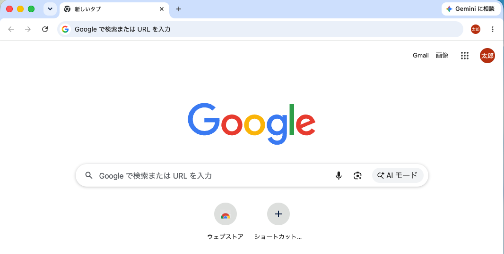
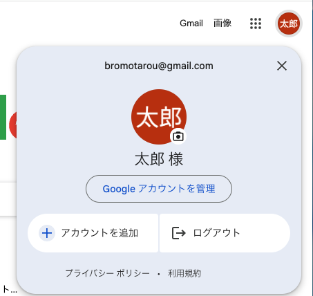
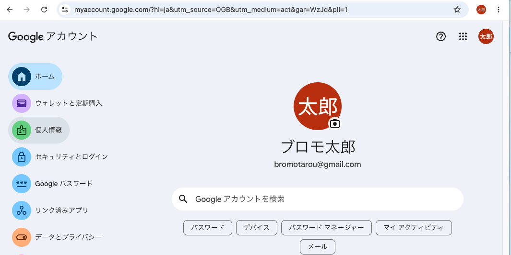
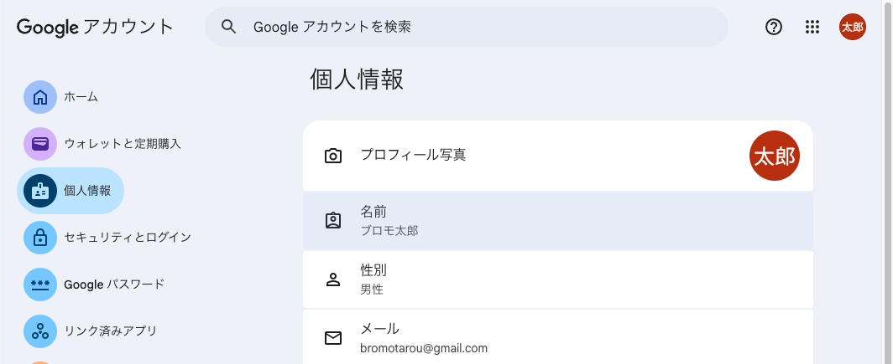
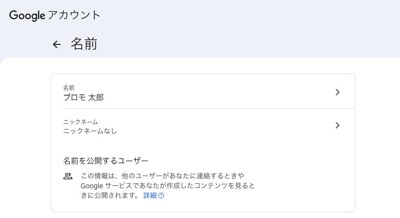
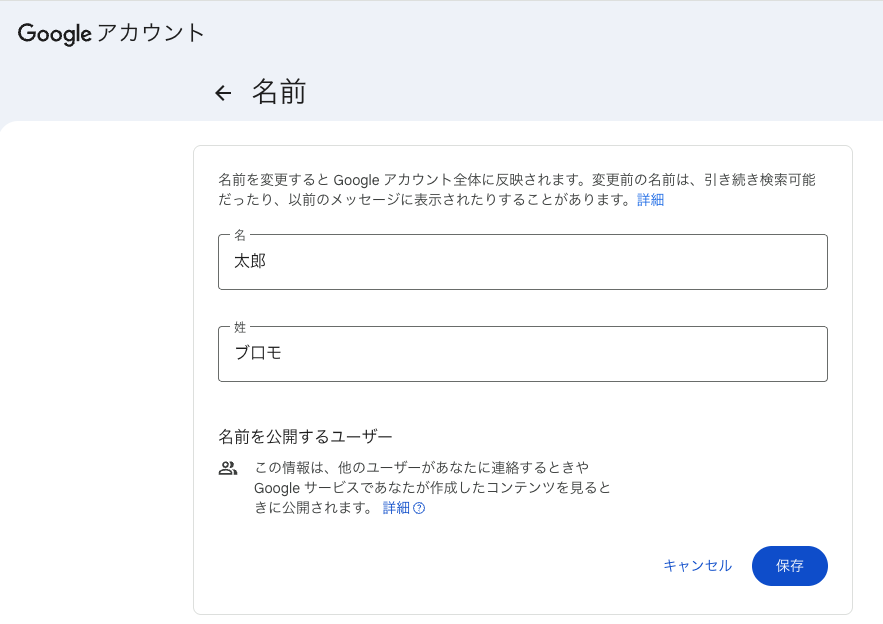

How to
Gmail・YouTubeなど、Googleのどのサービスの画面からでもかまいません。右上に表示されているプロフィールアイコンをタップします。

表示されたメニューから「Googleアカウントを管理」を選び、アカウントの設定画面へ進みます。

左側または上部のメニュー一覧から「個人情報」をタップし、個人情報の画面に切り替えます。

基本情報の中にある「名前」の項目をタップします。現在登録されている姓名が表示されます。

名前の右側にある「>」マークをタップすると、姓・名を入力できる編集画面が開きます。ご希望の表示名を入力してください。
ニックネームだけの変更も可能
入力した内容を確認し、「保存」（または「完了」）をタップすれば変更完了です。画面に新しい名前が反映されます。

姓名そのものを変えたくない場合は、「個人情報」画面の「ニックネーム」欄から、表示名だけを別途設定することもできます。口コミ投稿時にはニックネームが優先的に表示されます。